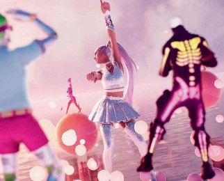

News
Robotics
Matthew Sparkes
Briefing
An old idea is gaining new traction through online gaming and big tech’s bet on virtual reality, says Matthew Sparkes
A SNAKE-like robot made of giant screws and flexible joints that can travel across hard or loose surfaces and worm into tiny spaces such
as tubes and tunnels may be key to exploring the interior of Saturn’s frozen moon Enceladus.
The ARCSnake is formed of modular segments and propels itself with Archimedes screws. These helical devices push material backwards to move the robot forwards. Half the screws rotate clockwise and half anticlockwise to prevent the robot from simply rolling sideways, although making them both rotate in the same direction does allow it to quickly roll sideways along flat ground.
The motors, control systems and sensors are housed inside the hollow screws. The 6.1-kilogram robot is operated by a human controller manipulating a miniature scale model of it remotely.
Due to the robot’s numerous joints, this is currently the most intuitive way to steer it, but future versions designed for exploration could be controlled differently or even entirely automated (arxiv.org/ abs/2107.14427).
Parts of the machine were inspired by previous work on a device designed for colonoscopies,
ARCLAB
The ARCSnake robot is made from Archimedes screws linked by flexible joints
but it is now being investigated by NASA’s Jet Propulsion Laboratory for a possible mission to Enceladus.
Florian Richter at the University of California, San Diego, and his colleagues hope to work on an improved version of the device for NASA in the coming months. z
EPIC GAMES
MILLIONS of Ariana Grande fans attended her concerts last week, held not in a traditional venue, but within the video game Fortnite. These events, complete with music and 3D graphics, are an example of Silicon Valley’s new favourite buzzword: metaverse.
What is a metaverse?
It’s a shared online space that incorporates 3D graphics, either on a screen or in virtual reality. Science fiction author Neal Stephenson coined the term
in his 1992 novel Snow Crash, which features a future virtual reality version of the internet called the Street. More recently, a metaverse called OASIS featured in the novel and
film Ready Player One.
Are there real-world metaverses? Perhaps the first attempt to create a real metaverse was Second Life, which launched
in 2003 and grew to around a million regular users at its peak. It had its own currency
and users could build property, organise events and design their
own avatar, but there was nothing specific you were supposed to achieve. Duran Duran staged concerts within Second Life in 2006.
Other game developers also have their eyes on becoming a metaverse. Take Roblox, which
The year the term “metaverse” was
coined by author Neal Stephenson
allows players to create and share their own games. “Just as the mail, the telegraph, the telephone, text and video are utilities for collaborative work, we believe Roblox and the metaverse will join these as essential tools for business communication,” co-founder David Baszucki told The New York Times.
I’ve also seen Mark Zuckerberg talking about a metaverse.
Last month, Facebook founder Mark Zuckerberg announced that the company will become, or at least spawn, a metaverse called Horizon. On top of the
Ariana Grande’s avatar giving a concert inside Fortnite

current web and app versions of Facebook, it will offer either augmented reality or virtual reality universes.
Microsoft, too, is talking about becoming a leader in the field of “metaverse apps” and also has its own augmented reality hardware, HoloLens.
Why is everyone so keen all of a sudden?
The hardware and software are now sufficiently advanced. Spearheaded by gaming, metaverses using virtual or
augmented reality on affordable devices could become far more popular and start offering
truly practical or entertaining features. And of course, there is a lot of money to be made. Fortnite made $9 billion in revenue in 2018 and 2019 combined, with people paying to customise their avatars.
What other tech is needed? The decentralised technology behind cryptocurrencies may
play a role. One metaverse called Decentraland has a currency that can be used to buy land
or non-fungible tokens (NFTs), a form of unique digital items. Auction house Sotheby’s, which is pushing hard into the NFT world, owns a piece of
Decentraland, where it has built a replica of its London galleries. This is the kind of thing organisations were getting up to in Second Life over a decade ago.
Meanwhile, the Open Metaverse Interoperability Group is pushing for different metaverses to share technology so that avatars can move easily from one to another. z
18 | New Scientist | 21 August 2021